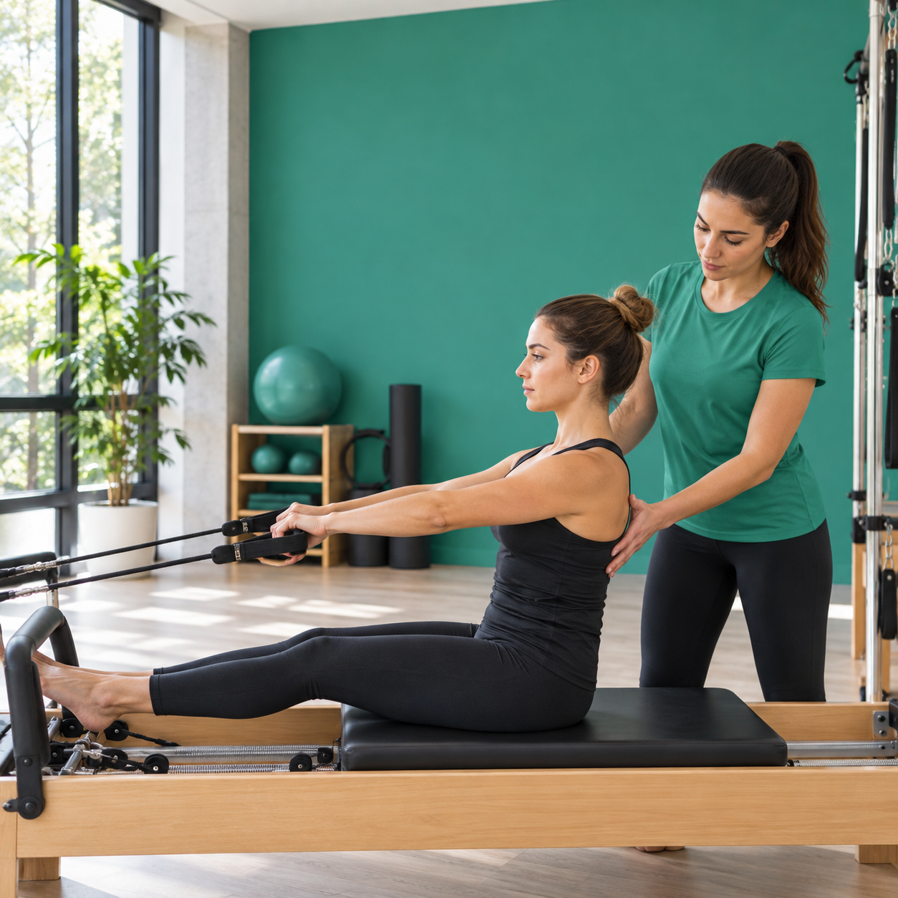

Converse com a unidade sobre sua rotina e disponibilidade.

VOLL Pilates · Parque Shalon
Movimento que acompanha a vida.
Pilates em São Luís com atendimento no Parque Shalon e consulta de disponibilidade pelo WhatsApp.
Endereço
Av. da Paz, 15 · Parque Shalon
Contato
(98) 99176-6746
Acesso parceiro
Wellhub · Silver+ · TotalPass
Horário publicado
Seg–sex · 7h–12h e 15h–21h
Pilates em São Luís
Uma prática guiada para mover com mais consciência.
A unidade Parque Shalon integra a rede VOLL Pilates Studios. A proposta da rede combina acompanhamento profissional, equipamentos de Pilates e uma prática ajustada ao ritmo de cada aluno.
Conhecer a rede VOLL ↗
Pilates em diferentes formatos
Controle, força e mobilidade em uma mesma prática.
Consulte Pilates funcional, solo, clínico e studio, modalidades listadas pela TotalPass para esta unidade.
Construa consistência respeitando seu ritmo e seus objetivos.
Pilates no Parque Shalon
Modalidades, acesso e rotina em um só lugar.
A unidade reúne a modalidade principal de Pilates, os acessos por Wellhub e TotalPass e a rotina de horários publicada para quem busca Pilates em São Luís ou no Parque Shalon.
Pilates
A modalidade principal publicada no Wellhub e na TotalPass, com necessidade de reserva e confirmação de disponibilidade.
Pilates funcional
Modalidade listada pela TotalPass para quem procura movimento aplicado à rotina e fortalecimento.
Pilates solo
Opção listada pela TotalPass, importante para buscas sobre controle corporal, postura e consciência de movimento.
Pilates clínico
Termo publicado na listagem da TotalPass e relevante para quem busca uma prática mais orientada.
Pilates studio
Ajuda a comunicar a experiência com estrutura de estúdio, equipamentos e acompanhamento.
Wellhub e TotalPass
Conecta a decisão do visitante às plataformas de benefício, com orientação para conferir plano e reserva.
Conforto para chegar, praticar e seguir o dia.
- Ar-condicionado
- Armários
- Vestiário e chuveiro
- Wi-Fi
- Fisioterapeuta
- Nutricionista
Comodidades conforme a página pública da unidade no Wellhub. Confirme a disponibilidade atual antes da visita.
Horários publicados
Escolha o melhor momento.
A agenda pode mudar. Consulte a unidade antes de se deslocar.- Segunda a sexta
- 7h–12h · 15h–21h
- Sábado e domingo
- Fechado
Wellhub + TotalPass
Mais caminhos para acessar a prática.
Elegibilidade, check-in e disponibilidade dependem das regras do aplicativo. O Wellhub publica Pilates a partir do Silver+; a TotalPass lista Pilates funcional, solo, clínico e studio para esta unidade.
Ver no Wellhub ↗ Ver na TotalPass ↗Informação sem atalhos
Dúvidas antes de visitar.
Onde fica a VOLL Pilates Parque Shalon?
Avenida da Paz, 15, Quadra 04, Parque Shalon, São Luís — MA, CEP 65072-570.
A unidade está disponível no Wellhub?
Sim. A página pública informa Pilates a partir do plano Silver+. Confirme sua elegibilidade no aplicativo.
Quais são os horários publicados?
Segunda a sexta, das 7h às 12h e das 15h às 21h. Sábado e domingo aparecem como fechados.
Como consultar disponibilidade?
Fale diretamente com a unidade pelo WhatsApp (98) 99176-6746.
Avaliações no Google
Um espaço lembrado pelo atendimento.
Ver perfil no Google ↗“Ótimo ambiente, professoras, recepção.” Caroline Vieira
“Aulas boas, profissionais capazes e preços justos.” Beatriz Cutrim
“Excelente atendimento e excelente espaço, tudo muito agradável.” Tereza Cristina Abreu
“Studio organizado e equipe muito acolhedora.” Mariana Lopes
“As aulas têm acompanhamento próximo e fazem diferença na rotina.” Paula Mendes
“Ambiente confortável, professores atentos e ótima localização.” Rafael Nunes
Parque Shalon · São Luís — MA
CEP 65072-570 @vollstudiosaoluis ↗